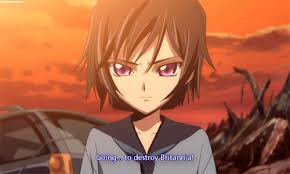
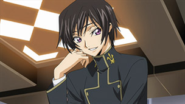
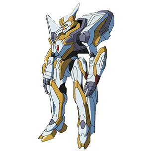
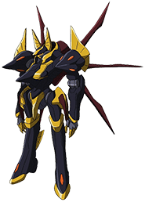
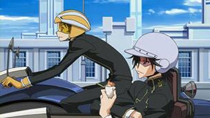
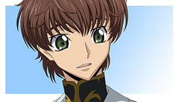
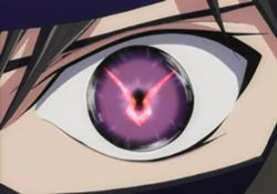

Rating:8/10
The series started by showing 2 boys climbing up a slope with a third person watching quietly. Then the narration kicks in telling how Japan was invaded and lost its independence to the Britannian Empire. After the war, the two boys were once again shown to be in some sort of a camp, with the black haired boy telling his friend that he would take down Britannia.
Fast forward 7 years later, the black haired boy, Lelouch Lamperouge, is now a high school student. Apparently he’s pretty smart as well, being able to take over and win a losing chess match against a nobility.
At the same time, a group of terrorist had hijacked something really important from the Britannian forces. The 3rd Britannian Prince Clovis, ruler of the now Area 11 (Japan) and ordered to send out the Knightmare Frames to secure their stolen good.
 I originally thought that the terrorists probably stole some new prototype Knightmare Frame (ala Gundam) but it turned out to be a chemical weapon instead.
The terrorist’s truck caught up behind Lelouch and Rivalz.
They decided to take a short cut which caused them to end up crashing into an abandoned construction site. Lelouch became disgusted with how the passerby weren’t bothering to help out and decided to do it himself. However, as Lelouch climbed aboard the truck, the terrorists began to move again, causing him to fall inside the vehicle.
As Lelouch tries to think of a plan to get out, the connecting door opened and a girl went into the cargo area of the truck and took off in a Glasgow Knightmare Frame.
The other terrorist continues to drive the truck and turned into a tunnel. I seriously wonder if this guy have a driving licensed when he once again crashed into an underground tunnel.
In his half-dead state due to an earlier injury, he flipped a switch and caused the truck door to open. A Britannian soldier caught sight of Lelouch and the poison gas container. He sneaked up and easily pinned Lelouch on the ground. After a little struggling, the Britannian soldier recognized Lelouch and revealed himself to be the other boy with Lelouch 7 years ago, Suzaku.
The container suddenly opened, but instead of poison gas, a girl in strange clothes with green hair appeared instead.
By this time another squad of the Britannian army had already arrived and the leader gave orders for Suzaku to shoot Lelouch. He refused and while he was looking over at Lelouch and the girl, he was shot instead.
The Britannian army was just about to shoot Lelouch when the truck driver flipped the other switch and self-destructed the entire vehicle.
When Prince Clovis heard of the explosion, he decided to permanently purge the Shinjuku Ghetto, leaving no survivors. Thus the massacre began.
Lelouch and the mysterious girl finally found their way out of the tunnel through a warehouse, but quickly hid when the earlier squad entered and killed off every living person in there, including a child. Just as they turned to move out, Lelouch’s mobile phone began to rang.
The leader fired a shot at Lelouch after securing the girl, but she struggled to get free and took the shot for Lelouch instead. However, just as he was giving up hope, something strange happened.
He heard the girls voice in his head, offering him a contract for the power of the Kings, showing a series of unknown images. He accepted it easily and began acting arrogant in front of the enemy squad.
Lelouch declared himself as Lelouch Vi Britannia and ordered the Britannian soldiers to die, to which they willingly obliged with a grin. Lelouch had gained the power of the Geass of obedience.
This part is rather interesting. As blood were spilled all over the place, some even splashing on his face, he began to look troubled and distressed, as if suddenly realizing he had caused the death of the entire squad. But just before the episode ended, his fearful expression turned into one of a devilish grin. While the entire episode was captivating enough for me, this was the key point that turned me into an instant fan.
Rating: 8/10
As Lelouch stared the the body of the girl, wondering what she had intended to do with him, a Sutherland Knightmare Frame blasted its way through into the warehouse to find the special troops dead and a single Britannian student in there. The Sutherland’s pilot demanded Lelouch to explain what had happened and threatened him by firing a few giant bullets.
Lelouch tried to use his powers and ordered the pilot to exit the Knightmare Frame, but found out that he needs to be in direct contact with a person in order to use the Geass. He quickly improvised by claiming to be a son of a Duke. Lelouch raised his hands and asked that his ID, located in his back pocket, be checked and requested for protection once he had been identified to be who he claimed to be.
The Sutherland pilot deactivated the Knightmare Frame and exited the unit, saying that she will check the ID herself. Lelouch quickly took the opportunity to use the Geass on her and took the Knightmare Frame.
Suzaku apparently had survived both the shot and explosion. His father’s keepsake had saved him from the gun shot. He was then given the keys to pilot a prototype Knightmare Frame by Lloyd, who up until now appeared to be the mad scientist of the series who is keen on collecting data for his latest toy.
Back in the hijacked Sutherland, Lelouch tries to gather as much outside information as he could and started planning his next moves. Using the 2-way radio he had obtained in the terrorist’s truck earlier, he contacted the female terrorist in the Glasgow and gave her instructions on how to escape, saying that she should follow his orders if she wanted to win.
As a reward for going under his command, Lelouch presented the terrorist group with a train full of Sutherland units. Even now I’m still trying to figure out where this came from, but I’m just guessing that those were the backup units for the Britannian army attacking the area and Lelouch had somehow managed to hijack its controls. However, Lelouch was particular about the female terrorist to continue in her damaged Glasgow unit to act as a diversion in his strategy.
It was also nice to see that Lelouch had not let the entire event go to his head. He realizes that human lives are at stake and that he needs to stay calm and collected in order for them to win unscathed.
And the strategy game between Lelouch and Prince Clovis began. Could someone please tell me where Lelouch managed to find all those chess pieces in the Sutherland? Because I’m pretty darn sure he wasn’t carrying any ever since he won the game against the noble way back at the start of the first episode.
Clovis called for a full frontal assault, causing the break in formation. Lelouch calls this the worst possible strategy for the enemy as it would allow his entire masterplan to be executed without a hitch and effectively taking out the entire Britannian forces in a single move.
In a desperate move, Clovis allowed Lloyd to send out the new 7th generation Knightmare Frame prototype, the Lancelot, piloted by Suzaku. This is the coolest mech in the series thus far, and only the Gawain is close enough to matching it in coolness.
The Lancelot is truly a powerful machine as it easily took out the terrorist’s Sutherlands and putting a huge dent in Lelouch’s strategy. Through its advanced system, the Lancelot was able to discover Lelouch’s hiding place and began chasing after him. Just as Lelouch was about to eject, Suzaku saw a lady falling down a crumbling building with a baby and decided that it was more important to save them instead of chasing after the terrorist commander.
Just as the Britannian forces was about to finish off what was left of the ghetto and the terrorist, Prince Clovis’s voice boomed throughout the area, calling for immediate retreat and offer aid to both Britannians and Elevens (remnants of the Japanese).
Back in Clovis’s mobile headquarters, he asked a soldier who was pointing a gun at him whether he was satisfied. It turned out that he was forced to recall the troops because of this man. When Clovis asked who he really was, Lelouch revealed himself by addressing Clovis as his elder brother. Lelouch greeted his elder brother by declaring himself as the 17th successor and 2nd in line to throne, Lelouch Vi Britannia.
Clovis was shocked and became pale as a ghost, claiming that Lelouch should had already been dead, to which Lelouch responded that he had returned in order to change everything.
Rating: 8/10
Clovis tries to convince Lelouch to return to the motherland with him, but Lelouch refused by reminding Clovis of what had happened to him. Lelouch’s mother was said to be murdered by a member of the royal family although they made it look as if it was a terrorist attack. Clovis denied that he was the culprit. Lelouch then used his Geass to make Clovis tell him what he knows, and he named 2nd Prince Schneizel and 2nd Princess Cornelia, saying that they should know something about it.
Lelouch demanded to know if they were the mastermind. However, Clovis was unable to answer and Lelouch concluded that he really didn’t know anything about the incident. Once Lelouch deactivated his Geass, Clovis frantically denied that he had anything to do with the murder. He breathed a sigh of relief when Lelouch acknowledged that he was telling the truth, but even so he had no plans of letting Clovis go alive. Clovis begged to be spared, saying that they were still related even though they were only half-brothers. His plea fell on deft ears and the gun trigger was pulled.
Next day in school, Lelouch was surprised that news of Clovis death wasn’t announced. As he recalled the events from the previous day, he felt sick and threw up in the toilet, admitting that his nerves were still too weak for what he had done.
He was also surprised to see a familiar face in class and finally realized who the female terrorist he saw really was – Karen Stadtfeld. Daughter of an distinguished family, but has a weak body and therefore seldom showed up in class.
Using the power of Geass, Lelouch dragged the truth out of Karen about who she really was and she was with the terrorist group.
Apparently, although her father was a Britannian, her mother was a Japanese, making her a half. Lelouch deactivated his Geass and walked away, but turned it on again on Karen to tell her not to talk about Shinjuku. However, to his surprise, the Geass didn’t seem to work anymore and Karen began to demand for an explanation to his questions.
Fortunately for Lelouch, Shirley called out from above to remind them that they are supposed to be heading for science class and Lelouch took the opportunity to take off.
In an unknown location, General Patre ordered a group of scientists to relocate and hide. Although the nature of the group is unknown, there were the containers similar to the one which was believed to contain poison gas, as well as clothes like the one which the strange girl was wearing. There were also pictures of the scientists doing experiments with that girl.
At home, Lelouch revealed that his ultimate goal is to create a peaceful world for his sister, Nunnally.
The following day Lelouch experimented with the Geass and concluded that the Geass would only work on the same person once.
Karen began to develop suspicions about Lelouch. He realized this too and decided that its best for him to settle this as soon as possible. After class ended, he went up to Karen and said that he would like to have a word with her, to which she willingly obliged.
He brought her to the student council’s clubhouse but before they could start talking the rest of the council came barging in, with council President Mily thanking Lelouch for bringing Karen over. Lelouch seemed surprised as well and Milly explained that Karen would be a part of the council as a request from her grandfather, the board chairman of Ashford Academy.
Karen got drenched with the champaign Rivalz threw over to Lelouch and ended up in the showers. When Lelouch brought her a change of clothes, she asked him to hand her the pouch that was near the sink. As he pushed his hands behind the shower curtains, Karen forcefully grabbed them and demanded an explanation for his question about Shinjuku from before.
The bathroom phone rang just then and Lelouch picked it up. He passed the phone to Karen, saying that it was for her although he doesn’t know who it is. Karen was surprised to hear the mysterious voice that had led them in the battle previously, realizing that she may have made a mistake about Lelouch.
He had pre-recorded his voice and made Sayako to be his accomplice in fooling Karen using Geass.
The news also finally announced Clovis’s death, as well as the capture of a suspect – Kururugi Suzaku.
See more at: Code Gease Episode Reviews: Episode 1-3